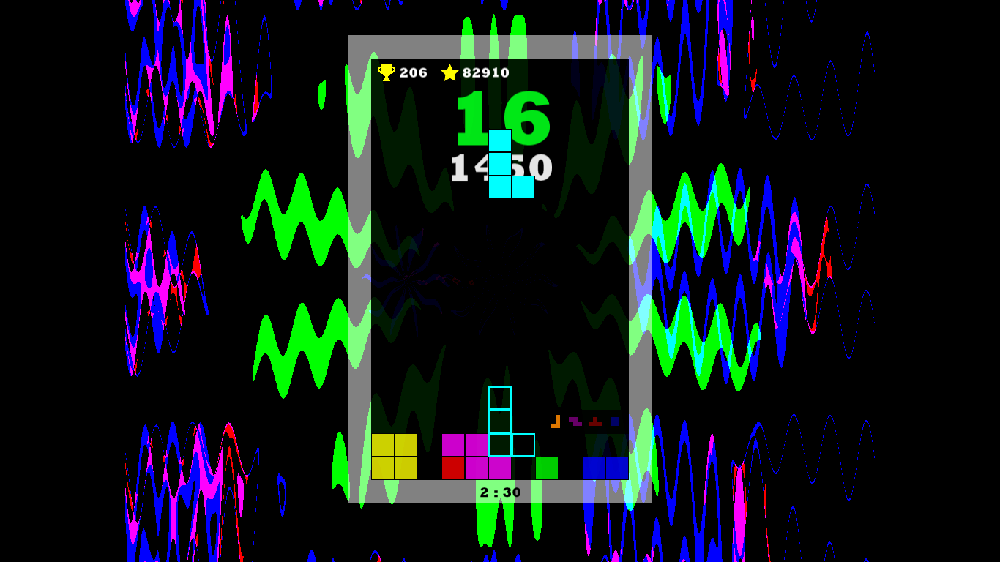
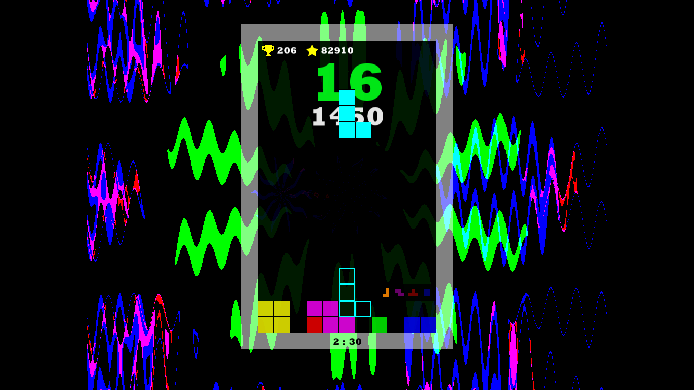

Gabriel Benjamin Valdez De León
Hola, un gusto, soy Gabriel Valdez, vivo en Guatemala, me gusta jugar videojuegos , ver anime, jugar basquet, programar, pasear al perro, entre otras cosas. Cuando estaba en mi adolescencia mi mayor anelo era desarrollar videojuegos, actualmente me interesa mas aprender nuevas habilidades ,vivir nuevas experiencias y crecer como persona.

Videojuegos
Los videojuegos no solo permiten contar bellas historias, si no que el jugador forme parte de ellas, tambien dejan que viva nuevas experiencias, sienta varias emociones y disfrute nuevas aventuras. Los videojuegos son como un arte, con sus bellos paisajes, sus entrañables historias y su abrumadora musica puede hacer llegar un millon de sentimientos al jugador. Los videojuegos que recuerdo con mas aprecio son:
- The Elder Scroll Skarym
- Undertale
- Limbo
- The Legend Of Zelda Majora Mask
- Entre otros


Anime
Los japoneses no solo se lucen haciendo videojuegos si no haciendo
series animadas, historias extraordinarias, fuera de lo comun, con menos
censura , dandonos joyitas como FullMetal Alchimist, Death Note, Hunter X Hunter
,Jujutsu Kaizen, Evangelion y mi favorito Erased y Re Zero.
Obviamente hay mas joyitas pero la lista seria interminable.

Bienvenido
Presione algun icono de la esquina inferior derecha
Programacion
Este gusto vino por mi amor a los videojuegos, la programacion permite automatizar
cualquier cosa, crear maravillas , superar el limite humano.
Empece a programar a los 15 años en 3ro basico, nos estaban enseñando
Python, aveces me gustaba hacer juegos de test (solo hice 2 jajaja).
En bachillerato me habia interesado la programacion, decidi aprender C++, ¿pero como
aprenderia?, me decidi verme un curso en Youtube de "Programacion ATS" sobre C++.
A inicios de la cuarentena habia decidido aprender a como se hacian los juegos, con tiempo y
disciplina logre aprenderlo con Adderly Céspedes y Guinxu que eran grandes you tubers, la herramienta
que aprendi con ellos fue Game Maker Studio 1.4.
Logre hacer 2 juegos , 1 fangame del primer mundo de Super Mario Bros y otro
de Tetris .
Cabe aclarar que el fangame de Mario no lo hice solo, el arte fue hecho por el talentoso Marcos Milian.
Actualmente estoy desarrollando Frog Adventure en Godot Engine, el arte fue hecho por el habilidoso
Pixel Frog. Aunque esto solo es un hobby.
Actualmente me interesa aprender sobre desarrollo web, y se muy bien que me falta mucho por aprender.
 
